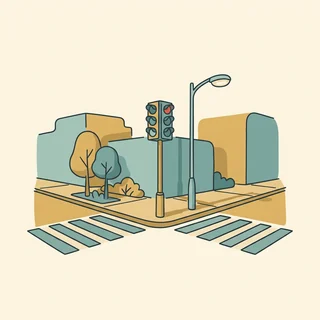
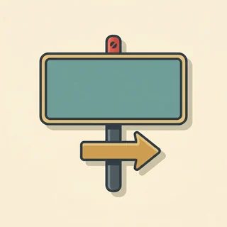
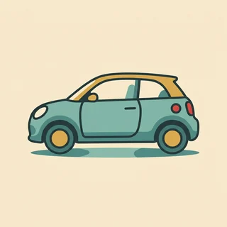
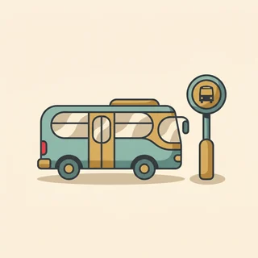
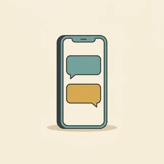

deutschoderwas · Sprechclub · Woche 7 · Strang A · Teil 2 · Mittwoch, 28. Oktober
Nach dem Weg fragen — und was tun, wenn nichts fährt
Am Montag ging es darum, in den Zug zu kommen. Heute geht es um die zwei Momente danach: Du stehst irgendwo und weißt nicht, wo es langgeht — oder du stehst am Bahnsteig und der Zug kommt einfach nicht. Für beides gibt es feste Sätze, und die sitzen nach dieser Stunde.
Dein Niveau
Gleiches Thema, andere Sätze. Wechsle jederzeit — probier ruhig beide Seiten aus.
Du stehst da und weißt nicht, wo es langgeht
Das Handy ist leer oder es gibt kein Netz, und irgendwo vor dir liegen drei Straßen. Der Trick ist nicht, perfekt zu fragen — sondern so zu fragen, dass die Antwort kurz ausfällt. Denn eine lange Wegbeschreibung versteht auch niemand, der die Sprache gut kann.

Wann hast du zuletzt nach dem Weg gefragt?
Fragst du lieber Menschen oder schaust du aufs Handy?
Was machst du, wenn du die Antwort nicht verstehst?
Warum sind Wegbeschreibungen so schwer zu verstehen?
Wie merkst du dir einen Weg, den dir jemand erklärt?
Was ist besser: einmal fragen und viel bekommen, oder dreimal fragen und wenig?
🔑 Der Trick für heute: Frag nicht „Wie komme ich zum Bahnhof?“, sondern „Ist der Bahnhof in dieser Richtung?“ und zeig dabei. Dann bekommst du ein Ja oder ein Nein statt einer Beschreibung mit vier Abbiegungen — und kannst nach hundert Metern einfach noch mal fragen.
Der Zug kommt nicht. Und jetzt?
Auf der Anzeige steht plötzlich eine andere Zeit, oder gar nichts mehr. In Deutschland heißt das dann Zugausfall oder Schienenersatzverkehr — zwei Wörter, die man einmal gehört haben muss, sonst versteht man die Durchsage nicht. Und meistens gibt es eine Lösung, man muss nur danach fragen.
Hattest du schon einmal eine große Verspätung?
Was hast du gemacht?
Wem sagst du Bescheid, wenn du später kommst?
Was ärgert dich mehr: die Verspätung oder die fehlende Information?
Wie sagst du im Beruf, dass du zu spät kommst?
Wann lohnt es sich, jemanden vom Personal zu suchen?
💡 Zwei Wörter, die dich retten:der Zugausfall — der Zug fährt gar nicht. der Schienenersatzverkehr — statt des Zuges fährt ein Bus, meistens vor dem Bahnhof. Wenn du diese beiden in einer Durchsage hörst, weißt du sofort, was zu tun ist: raus und nach dem Bus schauen.
Kurz zurück: Montag in zwei Minuten
Falls du Teil 1 verpasst hast — das hier reicht, um heute mitzumachen.
die Fahrkarteder Bahnsteigdas Gleisumsteigeneinsteigenaussteigendie Durchsagedie Verspätungder Anschlussabfahren
Trennbar oder nicht
So ging die RegelIch steige in Hamm um. Aber: Ich muss in Hamm umsteigen. Und im Perfekt: Ich bin in Hamm umgestiegen.
Die Uhrzeit
So ging die ZeitAuf der Tafel steht vierzehn Uhr dreißig. Gesagt wird halb drei — nicht halb zwei.
Was bedeuten ab, an und Gl. auf der Anzeige?
Wohin gehört die Vorsilbe bei umsteigen?
Wie spät ist halb drei?
🔁 Zu zweit, dreißig Sekunden: Einer sagt eine Uhrzeit im Fahrplanformat, der andere sofort gesprochen — und danach einen Satz mit einem trennbaren Verb. Dann geht es los: Heute stehen wir nicht im Zug, sondern davor.
Zwölf Wörter für den Weg und für die Wartezeit
Sagt jedes Wort laut — mit Artikel. Und gleich einen Satz hinterher: Wo in deiner Stadt würdest du dieses Wort brauchen?
der Weg
„Können Sie mir den Weg zum Bahnhof zeigen?“
💡 Feste Wendungen: nach dem Weg fragen und den Weg zeigen. Und ganz wichtig für den Alltag: Der Weg dauert zehn Minuten — bei Wegen sagt man dauern, nicht brauchen.
die Ampel
„Gehen Sie bis zur Ampel.“
💡 Der wichtigste Orientierungspunkt in jeder Wegbeschreibung. Merk dir die Wendung bis zur Ampel — bis zu steht immer mit Dativ, deshalb zur und nicht zu die.
die Kreuzung
„An der nächsten Kreuzung links.“
💡 Dazu passt die Ecke für kleinere Stellen: um die Ecke. Und Vorsicht — an der Kreuzung heißt: dort stehen. über die Kreuzung heißt: darüber gehen. Zwei Präpositionen, zwei Fälle.

das Schild
„Folgen Sie einfach den Schildern.“
💡 Plural: die Schilder, mit -er. Und das Verb dazu steht mit Dativ: den Schildern folgen. Wenn du unsicher bist, ist das oft die beste Antwort auf eine zu lange Wegbeschreibung.

abbiegen
„Biegen Sie an der Ampel rechts ab.“
💡 Trennbar, und im Perfekt mit sein: Ich bin links abgebogen. Im Alltag lässt man das Verb oft ganz weg: An der Ampel rechts — das versteht jeder und ist völlig normal.
zu Fuß
„Zu Fuß sind das zehn Minuten.“
💡 Immer ohne Artikel: zu Fuß. Und die häufigste Frage danach: Ist das zu Fuß zu schaffen? — eine Ja-Nein-Frage, auf die man eine kurze Antwort bekommt.
die Haltestelle
„Die Haltestelle ist gleich um die Ecke.“
💡 Bei Wegbeschreibungen der häufigste Zielpunkt überhaupt. Und um die Ecke ist die freundlichste Antwort, die es gibt — sie heißt: sehr nah, du schaffst das.
die Verspätung
„Ich habe zwanzig Minuten Verspätung.“
💡 Nicht nur Züge haben Verspätung — Menschen auch: Ich habe Verspätung. Und das Verb ist reflexiv: sich verspäten. Ich verspäte mich um zehn Minuten.

der Ersatzverkehr
„Ab hier fährt Ersatzverkehr.“
💡 Das lange Wort dafür heißt der Schienenersatzverkehr, abgekürzt SEV. Der Bus steht fast immer direkt vor dem Bahnhof — wenn du das Wort in einer Durchsage hörst, geh einfach raus und schau dich um.
Bescheid sagen
„Ich sage dir Bescheid, wenn ich da bin.“
💡 Immer ohne Artikel und immer mit Dativ: jemandem Bescheid sagen. Wenn du zu spät kommst, ist das der wichtigste Satz überhaupt — in Deutschland zählt die frühe Information mehr als die Entschuldigung hinterher.

das Handy
„Mein Handy ist gleich leer.“
💡 Ein deutsches Wort, das im Englischen so nicht existiert — dort heißt es mobile oder cell phone. Und wenn der Akku leer ist: Mein Handy ist leer, nicht tot.
die Durchsage
„In der Durchsage kam etwas von Ersatzverkehr.“
💡 Bei Störungen kommt die wichtigste Information immer per Durchsage — und immer schnell. Hör auf drei Dinge: Zug, Grund, was jetzt gilt. Den Rest kannst du getrost überhören.
💡 Spiel „Blind zum Ziel“: Einer denkt sich ein Ziel im Raum aus und beschreibt den Weg dorthin nur mit Wegwörtern — geradeaus, dann links, bis zum Fenster, an der Pflanze vorbei. Der andere schließt die Augen und geht mit. Wer ankommt, hat gewonnen. Ihr merkt sofort, welche Wörter wirklich helfen.
Richtung, Punkt oder Schild?
Menschen erklären Wege auf drei ganz verschiedene Arten. Wenn du weißt, welche du gerade bekommst, weißt du auch, ob du sie dir merken kannst — oder besser nach hundert Metern noch einmal fragst.
🧭
die Richtung
grob, aber leicht zu merken
Immer geradeaus, dann sehen Sie es schon.
📍
der Punkt
an etwas Sichtbarem entlang
Bis zur Ampel und dann links.
🪧
das Schild
am zuverlässigsten von allen
Folgen Sie einfach den Schildern.
✅ Kannst du dir merken
Ist der Bahnhof in dieser Richtung?
Warum das funktioniertEine Ja-Nein-Frage mit einer Handbewegung dazu. Die Antwort ist ein Wort, und danach gehst du hundert Meter und fragst einfach noch mal. Drei kurze Fragen sind besser als eine lange Antwort.
❌ Verlierst du unterwegs
Wie komme ich zum Bahnhof?
Das ProblemDie Frage ist völlig richtig — nur bekommst du darauf eine Beschreibung mit vier Abbiegungen und zwei Straßennamen. Nach dem dritten Satz ist der erste weg, und nachfragen traut man sich dann meistens nicht mehr.
✅ Bringt dich weiter
Ist das zu Fuß zu schaffen?
Warum das klug istDu erfährst in einem Wort, ob du überhaupt losgehen sollst. Und wenn nein, kommt fast immer von selbst hinterher, welcher Bus fährt — die Leute helfen gern weiter, wenn die erste Frage leicht zu beantworten war.
❌ Hilft dir nicht
Ist das weit?
Das ProblemWeit ist für jeden etwas anderes. Der eine sagt nein, gar nicht und meint zwanzig Minuten. Frag lieber nach Minuten oder danach, ob du laufen kannst.
✅ Rettet dich bei Störung
Entschuldigung, was gilt jetzt für den Zug nach Köln?
Warum das wirktDu fragst nach dem, was jetzt zählt — nicht nach dem, was passiert ist. Personal auf dem Bahnsteig hat wenig Zeit und antwortet auf diese Frage in einem Satz: Ersatzverkehr vor dem Bahnhof oder Gleis elf, in zwanzig Minuten.
❌ Kostet nur Zeit
Warum hat der Zug denn schon wieder Verspätung?
Das ProblemVerständlich, aber es bringt dich keinen Meter weiter. Der Mensch vor dir kann nichts dafür und weiß den Grund meistens selbst nicht. Den Ärger kannst du hinterher loswerden — jetzt brauchst du eine Information.
Vier Sätze, und du kommst trotzdem an:
Langsamer bitten:Entschuldigung, noch mal langsam bitte? — kostet nichts und hilft immer.
Nur den ersten Schritt nehmen:Also erst geradeaus, ja? Den Rest fragst du später noch einmal.
Auf die Richtung zeigen:In diese Richtung? — dann nickt oder schüttelt jemand, und das versteht man immer.
Nach dem Schild fragen:Gibt es ein Schild dorthin? Schilder sind geduldiger als Menschen.
Und der wichtigste Gedanke: Du musst die ganze Beschreibung gar nicht verstehen. Wenn du die erste Richtung hast, bist du schon weiter — und in hundert Metern steht der nächste Mensch, den du fragen kannst.
🎯 Zu zweit, eine Minute: Einer beschreibt einen Weg absichtlich zu lang und zu schnell. Der andere darf nur mit den vier Sätzen aus der Hilfe reagieren — und muss am Ende die erste Richtung wissen. Danach tauschen.
Vier Bausteine, und du kommst an
Fragen, verstehen, Bescheid sagen, umplanen. Vier Handgriffe für die zwei Situationen von heute — den unbekannten Weg und den Zug, der nicht kommt.
1 · 🧭 Nach dem Weg fragen Entschuldigung, wo ist …?Ist das in dieser Richtung?Ist das zu Fuß zu schaffen?Wie lange dauert das ungefähr?
So klingt esEntschuldigung, ist der Bahnhof in dieser Richtung?
2 · 👂 Sicher verstehen Noch mal langsam bitte?Also erst geradeaus, ja?An der Ampel links — richtig?Gibt es ein Schild dorthin?
So klingt esAlso erst geradeaus und dann an der Ampel links — richtig?
3 · 📱 Bescheid sagen Ich komme etwas späterIch habe zwanzig Minuten VerspätungIch sage dir Bescheid, wenn ich losfahreFang schon mal ohne mich an
So klingt esIch komme etwas später — der Zug hat Verspätung.
4 · 🔄 Umplanen Was gilt jetzt?Fährt hier Ersatzverkehr?Wann fährt der nächste?Kann ich auch anders fahren?
So klingt esEntschuldigung, was gilt jetzt für den Zug nach Köln?
1 · 🧭 Genauer fragen Können Sie mir sagen, wie ich am besten zu … komme?Lohnt sich zu Fuß oder nehme ich besser den Bus?Ist der Weg gut ausgeschildert?Komme ich da mit dem Kinderwagen durch?
So klingt esLohnt sich das zu Fuß oder nehme ich besser den Bus?
2 · 🔁 Zurückspiegeln Ich fasse kurz zusammen: …Habe ich das richtig verstanden, dass …?Das heißt, ich gehe zuerst …Und danach halte ich mich links?
So klingt esIch fasse kurz zusammen: geradeaus bis zur Ampel, dann rechts und den Schildern folgen.
3 · 📱 Verbindlich Bescheid geben Ich verspäte mich um etwa zwanzig MinutenIch melde mich, sobald ich Genaueres weißSollen wir den Termin verschieben?Es tut mir leid, es liegt an der Bahn
So klingt esIch verspäte mich um etwa zwanzig Minuten und melde mich, sobald ich Genaueres weiß.
4 · 🧩 Alternativen klären Gibt es eine andere Verbindung?Wird der Ersatzverkehr angezeigt?Gilt meine Fahrkarte auch für die andere Strecke?Wo finde ich jemanden vom Personal?
So klingt esGibt es eine andere Verbindung, und gilt meine Fahrkarte dafür auch?
Verb das Ziel die Richtung Höflichkeit
📣 Sofort anwenden: Denk an einen Weg in deiner Stadt, den du gut kennst. Erklär ihn laut — mit Ampel, Kreuzung und Schildern. Danach dieselbe Strecke in nur zwei Sätzen. Die kurze Fassung ist die, die man sich merken kann.
Vier Situationen — zwei Runden
Runde 1: Lest den Dialog zu zweit laut. Runde 2: Klappt die Zeilen zu und spielt ihn frei — mit einem echten Weg aus eurer Stadt.
Dialog 1 · „Kurz fragen, kurz verstehen“
Du suchst den Bahnhof. Statt einer langen Beschreibung holst du dir die Richtung — und fragst später noch einmal.
B
Entschuldigung, ist der Bahnhof in dieser Richtung?
🗣️ Zeig dabei mit der Hand. Eine Ja-Nein-Frage plus Geste versteht man auch, wenn die Sprache noch wackelt.tippen = Hilfe zeigen
A
Ja, immer geradeaus, dann an der Ampel rechts.
B
Also geradeaus bis zur Ampel und dann rechts — richtig?
🗣️ Zurückspiegeln. Das kostet fünf Sekunden und du merkst sofort, wenn du etwas falsch verstanden hast.tippen = Hilfe zeigen
A
Genau. Etwa zehn Minuten zu Fuß.
B
Perfekt, das schaffe ich. Vielen Dank!
🗣️ Kurz bestätigen und bedanken. Wer die Antwort einmal wiederholt hat, braucht keine weitere Erklärung.tippen = Hilfe zeigen
Dialog 2 · „Wenn die Beschreibung zu lang wird“
Jemand erklärt dir den Weg sehr ausführlich. Du bremst freundlich ab und nimmst nur den ersten Schritt mit.
A
Also, Sie gehen hier runter, dann kommt eine kleine Brücke, danach rechts, aber nicht die erste, sondern die zweite …
B
Entschuldigung — noch mal langsam bitte? Also erst hier runter?
🗣️ Unterbrechen ist hier keine Unhöflichkeit, sondern Selbstschutz. Und die Nachfrage nimmt nur den ersten Schritt.tippen = Hilfe zeigen
A
Ja, hier runter bis zur Brücke.
B
Gut, bis zur Brücke. Und gibt es dort ein Schild?
🗣️ den Schildern folgen ist die beste Rettung: Schilder wiederholen sich, Menschen nicht.tippen = Hilfe zeigen
A
Ja, ab der Brücke ist es ausgeschildert.
B
Super, dann finde ich das. Danke Ihnen!
🗣️ Du hast nicht alles verstanden — aber genug. Genau so funktioniert es im Alltag.tippen = Hilfe zeigen
Dialog 3 · „Der Zug fällt aus“
Auf der Anzeige steht plötzlich nichts mehr. Du fragst jemanden vom Personal — nach dem, was jetzt gilt.
B
Entschuldigung, was gilt jetzt für den Zug nach Köln?
🗣️ Nicht nach dem Grund fragen, sondern nach der Lösung. Personal am Bahnsteig hat wenig Zeit und antwortet darauf in einem Satz.tippen = Hilfe zeigen
A
Der fällt aus. Ab hier fährt Ersatzverkehr, vorne vor dem Bahnhof.
B
Ersatzverkehr, vor dem Bahnhof. Und gilt meine Fahrkarte da auch?
🗣️ Wiederholen und gleich die zweite Frage anhängen. Bei Ersatzverkehr ist genau das die Frage, die sich sonst später stellt.tippen = Hilfe zeigen
A
Ja, ganz normal. Der Bus fährt in zehn Minuten.
B
Danke! Dann sage ich schnell Bescheid, dass ich später komme.
🗣️ Bescheid sagen — sofort, nicht später. In Deutschland zählt die frühe Information mehr als jede Entschuldigung hinterher.tippen = Hilfe zeigen
Dialog 4 · „Bescheid sagen“
Du bist verabredet und schaffst es nicht pünktlich. Du rufst an — kurz, mit einer Zahl und einem Vorschlag.
B
Hallo, ich bin es. Ich verspäte mich um etwa zwanzig Minuten.
🗣️ Direkt zur Sache und mit einer Zahl. Ich komme später allein hilft dem anderen nicht beim Planen.tippen = Hilfe zeigen
A
Oh, was ist denn los?
B
Mein Zug ist ausgefallen, jetzt fährt ein Ersatzbus. Fang ruhig schon mal an.
🗣️ Kurz erklären und sofort einen Vorschlag machen. Das nimmt dem anderen das Warten ab.tippen = Hilfe zeigen
A
Alles klar, kein Problem. Bis gleich!
B
Ich melde mich noch mal, wenn ich im Bus sitze.
🗣️ Ein zweiter Anruf mit einer sicheren Zeit ist mehr wert als eine lange Entschuldigung am Anfang.tippen = Hilfe zeigen
🎭 Und jetzt ihr: Spielt Dialog 2 mit einem echten Weg aus eurer Stadt — und der Erklärende soll absichtlich zu ausführlich sein. Der andere darf nur den ersten Schritt mitnehmen.
🧩 Geh, gehen Sie: der Imperativ und die Richtung
Eine Wegbeschreibung besteht fast nur aus zwei Dingen: aus Befehlsformen (gehen Sie, biegen Sie ab) und aus Richtungswörtern (bis zur, an … vorbei, über die). Beides ist schnell erklärt — und danach verstehst du jede Wegbeschreibung, die du bekommst.
Der Imperativ ist die Form, mit der man jemanden auffordert. Es gibt drei davon: die höfliche mit Sie, die vertraute mit du und die für mehrere. Die Sie-Form ist die einfachste — sie sieht aus wie die normale Verbform, nur wandert das Sie hinter das Verb: Sie gehen → Gehen Sie. Bei du fällt das Pronomen ganz weg und meistens auch die Endung: du gehst → Geh. Und keine Sorge: Im Deutschen klingt der Imperativ in einer Wegbeschreibung nicht unhöflich, sondern hilfsbereit.
🫱Sie-Form: Verb zuerst, Sie dahinterGehen Sie geradeaus.
▾
🫵du-Form: nur der VerbstammGeh geradeaus.
▾
✂️Trennbares Verb: Vorsilbe ans EndeBiegen Sie rechts ab.
▾
🧭Und dann die Richtung… bis zur Ampel, dann links.
Verb ganz vorneBiegen
Wer? (nur bei Sie)Sie
Wo und wiean der Ampel rechts
Vorsilbe ans Endeab.
Drei Imperative, und wann du welchen brauchst
Im Alltag reicht dir die Sie-Form — die benutzt du bei Fremden auf der Straße. Die du-Form hörst du unter Freunden. Lies die Paare laut, dann hörst du, wie klein der Unterschied im Bau und wie deutlich er im Ton ist.
🎩
Sie-Form
Verb vorne, Sie dahinter
Gehen Sie bis zur Ampel.
🙋
du-Form
nur der Stamm, kein Pronomen
Geh bis zur Ampel.
⚠️
Ein paar Verben ändern sich
nehmen → nimm, geben → gib
Nimm die zweite Straße.
Sie gehen → Gehen Sie geradeausdu gehst → Geh geradeausSie biegen ab → Biegen Sie rechts abdu biegst ab → Bieg rechts abSie nehmen → Nehmen Sie die zweite Straßedu nimmst → Nimm die zweite Straße
Die Richtungswörter und ihre Fälle
Vier kleine Wörter tauchen in fast jeder Wegbeschreibung auf. Bei zweien steht Dativ, bei zweien Akkusativ — und das merkt man sich am besten an einem festen Beispielsatz statt an einer Regel.
🅳
bis zu + Dativ
zur bei weiblich, zum bei männlich
bis zur Ampel · bis zum Bahnhof
🅳
an … vorbei + Dativ
vorbei steht ganz hinten
an der Post vorbei
🅰️
über, um, durch + Akkusativ
immer, ohne Ausnahme
über die Straße · um die Ecke
bis zur Ampel · bis zum Bahnhofan der Post vorbeiüber die Straßeum die Eckedurch den Parkgegenüber vom Kino
🧱 Bau die Sätze selbst
Tippe die Teile in der richtigen Reihenfolge an. Beim Imperativ steht das Verb ganz vorn — und bei trennbaren Verben die Vorsilbe ganz hinten.
📖 Und jetzt im Zusammenhang
Ein Weg, der nicht wie geplant lief, und ein Anruf, der die Sache gerettet hat. Wähle für jede Lücke das passende Wort.
Nein — und das hat vier Gründe:
Bei einer Wegbeschreibung ist er normal. Niemand sagt Sie könnten vielleicht geradeaus gehen. Man sagt Gehen Sie geradeaus.
Die Sie-Form ist automatisch höflich. Das Sie im Satz macht sie zur Auskunft und nicht zum Befehl.
Ein kleines Wort macht ihn weicher:Gehen Sie einfach geradeaus oder Gehen Sie mal bis zur Ampel.
Und mit bitte geht immer:Sagen Sie mir bitte Bescheid. Das ist die freundlichste Form, die es gibt.
Ein Satz zum Merken, in dem alles zusammenkommt: „Gehen Sie einfach geradeaus bis zur Ampel und biegen Sie dann rechts ab.“ Zwei Imperative, ein Weichmacher, eine Richtung — mehr braucht keine Wegbeschreibung.
🎭 Drei Situationen zu zweit
Einer sucht, einer hilft. Danach tauschen — und beim zweiten Mal ohne Notizen. Regel für alle drei: Die Antwort muss einmal zurückgespiegelt werden.
1 · Der Weg zum Bahnhof
A sucht den Bahnhof und hat kein Netz. B kennt sich aus und erklärt es — mit mindestens zwei Imperativen und zwei Richtungswörtern. A darf nur zwei Schritte auf einmal mitnehmen.
Entschuldigung, ist der Bahnhof in dieser Richtung?Also erst geradeaus, ja?Ist das zu Fuß zu schaffen?Gibt es dort ein Schild?
Können Sie mir sagen, wie ich am besten hinkomme?Ich fasse kurz zusammen: …Lohnt sich zu Fuß oder besser der Bus?Ist der Weg gut ausgeschildert?
✅ Eine gute Runde enthältB hat mindestens zwei Imperative und zwei Richtungswörter benutzt (bis zur, an … vorbei, über die, um die). A hat den Weg einmal zurückgespiegelt, bevor er losgegangen ist.
2 · Zu ausführlich
B erklärt absichtlich einen viel zu langen Weg mit fünf Abbiegungen. A muss freundlich bremsen und darf am Ende nur den ersten Schritt und ein Schild kennen — mehr braucht es nicht.
Noch mal langsam bitte?Also erst hier runter?In diese Richtung?Gibt es ein Schild dorthin?
Darf ich kurz nachfragen — der erste Teil?Habe ich das richtig verstanden, dass …?Den Rest frage ich unterwegs noch einmalIst es ab dort ausgeschildert?
✅ Eine gute Runde enthältA hat unterbrochen, statt höflich alles über sich ergehen zu lassen, und ist am Ende mit genau zwei Informationen losgegangen: erste Richtung und Schild.
3 · Der Zug fällt aus
A steht am Bahnsteig, der Zug fällt aus. B ist beim Personal und hat es eilig. A muss in zwei Fragen klären, was jetzt gilt und ob die Fahrkarte weiter gültig ist — und danach jemandem Bescheid sagen.
Was gilt jetzt für den Zug nach …?Fährt hier Ersatzverkehr?Gilt meine Fahrkarte da auch?Ich komme etwa zwanzig Minuten später
Gibt es eine andere Verbindung?Wo fährt der Ersatzverkehr ab?Muss ich mir das bestätigen lassen?Ich verspäte mich um etwa zwanzig Minuten
✅ Eine gute Runde enthältA hat nach der Lösung gefragt und nicht nach dem Grund. Beide Punkte sind geklärt, und A hat mit einer Zahl Bescheid gesagt, nicht nur ich komme später.
🎴 Sprechkarten
Zieh eine Karte und sprich mindestens vier Sätze am Stück.
Deine Aufgabe
Tippe auf den Knopf.
⏱️ Die 90-Sekunden-Challenge
Ein Weg, anderthalb Minuten, freies Sprechen. Nicht perfekt — sondern so, dass der andere ankommt.
Dein Wort
der Weg
1:30
Beschreib den Weg in vier Schritten, dann trägt dich die Zeit:
Wo geht es los? Gehen Sie hier raus und dann …
Die erste Richtung: geradeaus / links / rechts
Ein Punkt zum Festhalten: bis zur Ampel / an der Post vorbei / über die Straße
Und wie lange: Das sind etwa zehn Minuten zu Fuß.
Und wenn du selbst nicht mehr weiterweißt, ist der ehrlichste Satz auch der beste: „Ab da müssen Sie noch mal fragen — aber es ist ausgeschildert.“ Das ist keine schlechte Auskunft, das ist eine gute.
⏱️ Spielregel: In jeder Runde müssen zwei Imperative und zwei Richtungswörter vorkommen. Wer bis zu die Ampel sagt, gibt weiter — es heißt bis zur.
✅ Sitzt es schon?
8 Fragen. Tippe auf deine Antwort — die Erklärung kommt sofort.
✍️ Lückentext
Wähle in jeder Lücke das passende Wort.
📣 Danach laut: Jeder nennt reihum ein Ziel im Raum, der Nachbar beschreibt den Weg dorthin in genau zwei Sätzen — mit einem Imperativ und einem Richtungswort. Wer drei Sätze braucht, gibt weiter.
📮 Deine Hausaufgabe bis Montag
Vier kleine Aufgaben, zusammen etwa 20 Minuten. Nächste Woche wechselt das Thema — die Imperative brauchst du aber weiter, in jedem Rezept und jeder Anleitung.
💡 Warum das hilft: Nach dem Weg fragen ist für viele die erste echte Unterhaltung mit einem fremden Menschen auf Deutsch. Sie dauert zwanzig Sekunden, sie geht fast immer gut aus, und danach weiß man: Es funktioniert. Genau deshalb üben wir sie so gründlich.
0 von 0 Aufgaben geschafft.
So sehen die beiden Imperative nebeneinander aus:
gehen → Gehen Sie geradeaus. · Geh geradeaus.
abbiegen → Biegen Sie rechts ab. · Bieg rechts ab.
nehmen → Nehmen Sie die zweite Straße. · Nimm die zweite Straße.
folgen → Folgen Sie den Schildern. · Folg den Schildern.
warten → Warten Sie an der Haltestelle. · Warte an der Haltestelle.
Der eine Punkt, an dem viele hängen bleiben: Bei nehmen, geben und sehen ändert sich in der du-Form der Vokal — nimm, gib, sieh. Bei der Sie-Form passiert das nie.
So stehen die Richtungswörter mit ihren Fällen:
bis zur Ampel · bis zum Bahnhof — bis zu steht immer mit Dativ.
an der Post vorbei — auch Dativ, und vorbei rutscht ganz ans Ende.
über die Straße — Akkusativ, weil man sich darüber hinweg bewegt.
um die Ecke · durch den Park — beide immer Akkusativ, ohne Ausnahme.
gegenüber vom Kino — Dativ, und das von gehört dazu.
Die Eselsbrücke, die fast immer trägt: Bewegst du dich durch oder über etwas hinweg, ist es Akkusativ. Ist es nur ein Punkt, an dem du entlanggehst oder bis zu dem du gehst, ist es Dativ.
📬 Abgabe: Schick deine Sprachnachricht und die Imperative bis Sonntagabend. Ich achte besonders auf bis zur gegen bis zu die — und darauf, ob die Vorsilbe bei abbiegen hinten steht.
🔜 Nächste Woche:Zug fällt aus — meine Rechte. Heute ging es darum, was man am Bahnsteig sagt. Nächste Woche darum, was einem danach zusteht: Erstattung, Ersatz und die Frage, ab wann man ein Taxi nehmen darf.